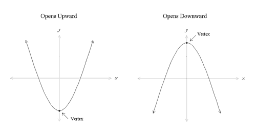
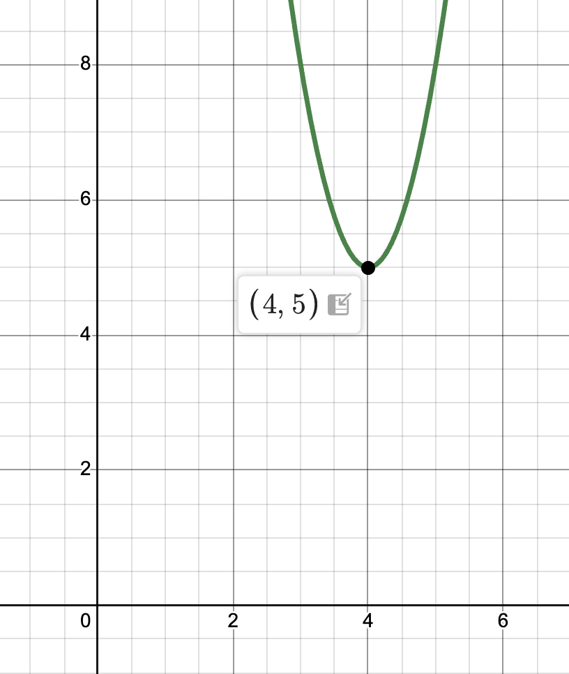
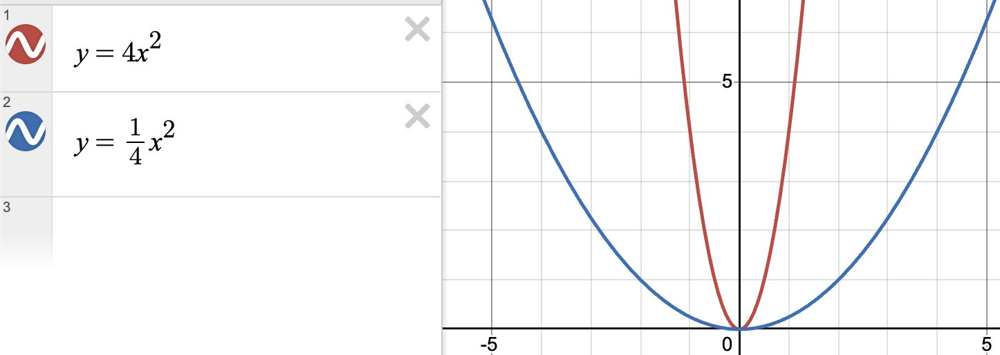
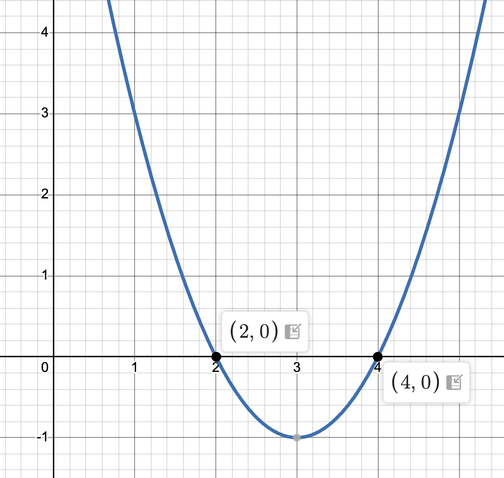

A quadratic is a polynomial whose degree is exactly 2.
When graphed, they will always follow the shape of a parabolic arc or curve. For example,

Quadratics can be represented in three distinct mathematical structures.
This is likely the one you have seen the most at this point, and can be represented by the general form
f(x) = ax2 + bx + c.
For example
f(x) = x2 + 3x + 5.
This form features terms with coefficients (a, b and c) separated by addition or subtraction, like in the example above - note that the x2 term must exist, otherwise the degree wouldn't be 2, and thus a ≠ 0. It also has terms that must be in descending degree order, and thus in the case of a quadratic the leading term with a degree of 2 must go at the front of the function, followed by the term with a degree 1 if needed and the term with no degree/constant if needed.
Standard form can be used for all polynomials of all degrees, but let's not go too deep into that!
This is much more exclusive to quadratics, and can be represented by the general form
f(x) = a(x - h)2 + k,
where (h, k) is the vertex of the quadratic.
For example
f(x) = 3(x - 4)2 + 5.
If we were to graph that, it would look something like

Notice that from our general form, we should have a vertex at (4, 5), and this is true in the highlighted point on the graph.
This can again be used for all polynomials of different degrees, but is most commonly used for quadratics. It can be represented by the general form
f(x) = a(x - p)(x - q),
where p and q are the solutions of the function.
For example
f(x) = 3(x - 4)(x - 5).
Now, you might be panicking, saying (cue the high-pitched squealing)
but, but, where is the degree of 2?
That's a good observation. But now I want you to try and expand it out so there are no more parantheses visible. So,
f(x) = 3(x2 - 9x + 20), thus
f(x) = 3x2 - 27x + 60.
And look at that, the degree of 2 came back! This happens because factored form is just a more compact form that allows us to see the solutions of the quadratic function, but the quadratic part of the function still exists.
Notice how each of these three forms all have an a value. This dictates the overall shape of the parabolic graph. Talking about signage, if the a value is positive, then the graph will be concave up, as shown in the image at the top of the page. If the a value is negative, the graph will be concave down, as shown in the same image.
Additionally, the magnitude of the a value also determines the apparent "width" of the parabola. The larger the value gets, the narrower the graph becomes, and the closer to 0 the a value gets, the wider the graph becomes. Take a look at the images below to illustrate what I mean.

The standard form also includes a c value. This dictates the y-intercept of the quadratic's graph. While this y-intercept or c value is universal for all polynomials including quadratics, you might be wondering why we can't see this value in the other vertex and factored forms. But all you need to do is expand out each of the forms completely, and watch the magic happen!
Now, what does it mean to "solve" a quadratic? It is the equivalent of finding the x-intercepts of the function. Graphically, it would look something like

Clearly, the highlighted points of (2, 0) and (4, 0) are the x-intercepts of the function, thus the solutions to this quadratic are x = 2 and x = 4.
Using an equation, finding the solutions to a quadratic would involve setting the quadratic equal to 0.
But how? you may ask in your high-pitched squealing. Well, the first and easiest way is when your equation is in either vertex form or factored form. Both of these methods make it really easy to solve for the roots to the function, because it just involves some rearrangement. Let me show you what I mean.
Take the vertex form quadratic, f(x) = 2(x - 5)2 - 4. Remember that this is vertex form, because of its distinct layout and squared term. Now, remember that solving a quadratic involves finding the x-intercepts, or the values of x that make y equal to 0. In this case, f(x) is just a replacement for y, so in other words we need to find the values of x that make f(x) equal to 0. Believe it or not, we can do this by just setting f(x) equal to 0.
2(x - 5)2 - 4 = 0.
Now, it's as simple as solving for x. Like so.
2(x - 5)2 = 4,
(x - 5)2 = 2,
x - 5 = ± √2 (remember to take the ± of the square root to preserve the two possible roots of the quadratic if they exist),
x = 5 ± √2, or
x = 6.4142, x = 3.5858.
And tada! That wasn't that bad, right? We can do something similarly easy for factored form quadratics. For example, take f(x) = 2(x - 4)(x - 2).
Again, we set f(x) = 0 to solve for the quadratic's solutions. So,
2(x - 4)(x - 2) = 0.
And now, you might hit a roadblock. What can we do now? Sure, you can divide by the a value, or in this case 2. But that still leaves us with
(x - 4)(x - 2) = 0.
This is where we pull out the Zero Product Property. This builds on a rule I'm sure you learnt in elementary school, that any number multiplied by 0 just equals 0. Therefore, if you think about each term in the factored form quadratic as a number (because that's what they are), so (x - 4) as one number and (x - 2) as another, we know that the product of these two numbers must equal 0. So, x must take on a value such that either (x - 4) becomes 0, or (x - 2) becomes 0, because that is the only way for the product of these two numbers to equal 0 like we want.
I'm sure you can see where this is going, but that must mean that either x - 4 = 0 or x - 2 = 0, and so x = 4 or x = 2. As a result, these are the solutions to the example quadratic. Pretty cool, right?
Alright, but I'm sure you're now wondering, what about standard form quadratics? For example, something like f(x) = 2x2 + 5x + 2. How would you solve that?
Well, remember what solving for a quadratic means. It means setting it equal to 0, so we can write that
2x2 + 5x + 2 = 0. But now what?
Now, it is time to introduce you to 3 of the most well-known ways to solve quadratic equations.
This method is by far the most straightforward, because it just follows plugging numbers into a formula. The formula can be written as follows.
For a quadratic ax2 + bx + c = 0, the solutions x to the function are
x = (-b ± √(b2 - 4ac)) / 2a.
That's it.
Just as a quick example, if we take the quadratic in standard form f(x) = 2x2 + 5x + 2 from before, clearly a = 2, b = 5 and c = 2. Therefore, the solutions are
x = (-5 ± √(52 - 4(2)(2))) / 2(2), or
x = -2, x = -0.5
Pretty cool, right, going from that scary equation to two simple solutions? Of course, remember that this formula only works on quadratics in standard form. If you would like to use this method on every form, you can also just expand the other vertex and factored forms back into standard form (I trust you can do that). I will warn you, however, that only relying on this formula may be problematic, as there are a lot of places to wrong with the artihmetic and calculation, especially on a non-calculator section of your tests. Which is where the other methods come in.
This method involves converting a quadratic in standard form essentially into vertex form, to then solve as mentioned above. This is done by manipulating the quadratic in standard form into becoming a perfect square, hence the method's name. Let me show you want I mean on the example,
f(x) = x2 + 4x + 8.
Again remember, solving a quadratic means setting f(x) equal to 0, so
x2 + 4x + 8 = 0.
If you read the note on perfect squares underlining the word, clearly this polynomial isn't a perfect square, as no algebraic term could be squared to produce it. However, imagine if that 8 somehow magically turned into 4. All of a sudden, we would have x2 + 4x + 4, which turns out is a perfect square quadratic, of (x + 2)2. Therefore, we want to add some value to both sides of this equation so that on the left hand side, the constant term being added is 4 instead of 8. You might see that this can be done by subtracting 4 from both sides. Therefore,
x2 + 4x + 4 = -4, and now converting the left hand side to a perfect square gives us,
(x + 2)2 = -4.
Now, if I add 4 to both sides, giving us
(x + 2)2 + 4 = 0,
Notice how the function looks exactly like a vertex form quadratic. That is the beauty of completing the square, and now we can easily solve for the zeroes of the quadratic by rearranging the equation to solve for x, which given the example above I hope you know by now how to do.
The easiest situations to use completing the square in are when the a value of the initial standard form quadratic is 1. But what if it isn't, for example in f(x) = 2x2 + 4x + 8?
Well, now you just need to convert the quadratic so that when you are finding the perfect square it is only x2. This can be done by just factoring out the a value from the entire quadratic.